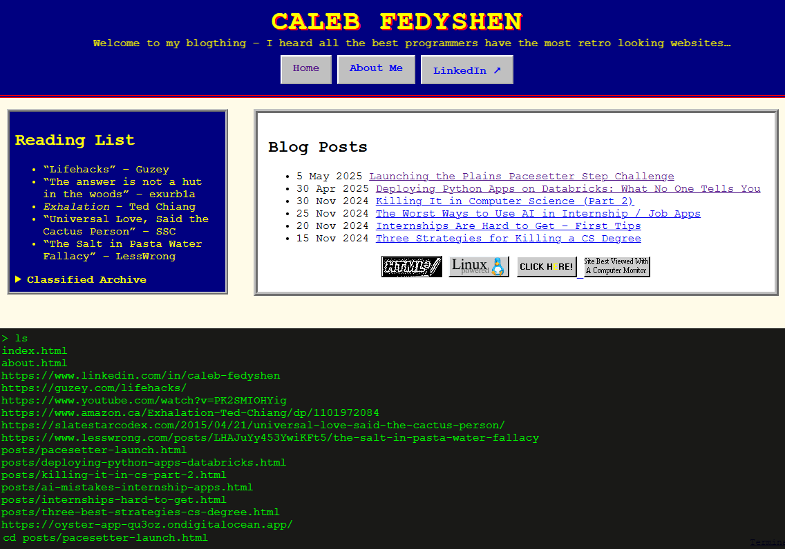

4 Jun 2025 • Calgary, AB
Open AI's Codex agentic programming system has been adding features to my blog in the background, while I worked on... well, my actual work. My blog now has another hidden easter egg! A terminal emulator built in that lets you navigate the site and get a fortune told, among other functions. Access it by hitting shift tilde or with the link in the bottom corner.

So far Codex has done almost all the programming, and let me focus on the ideas. I know it seems scary for some people, but to me the best path forward is to learn every new technology quickly and use it as a force multiplier. Codex still shares the base model's limitations on complex problems but can carry out tasks on its own. It will only get better from here — I'm already feeling the AGI lol.
#codex #AI #automation